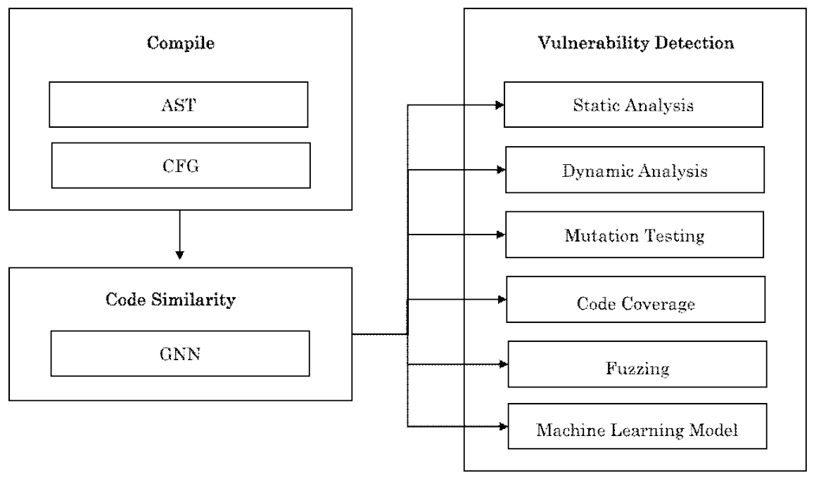
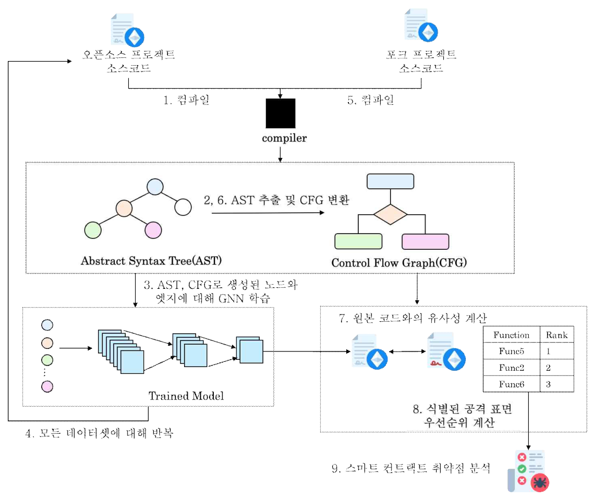
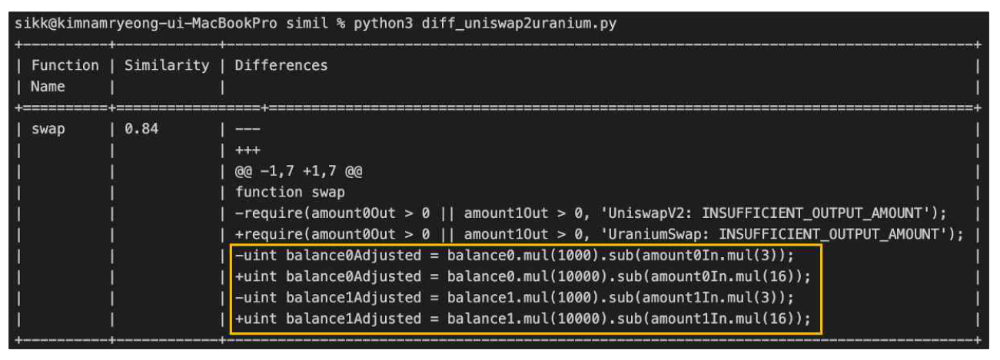
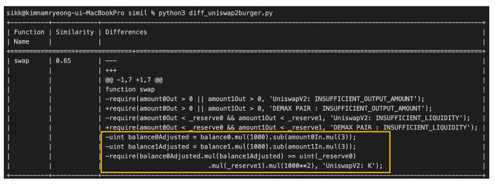
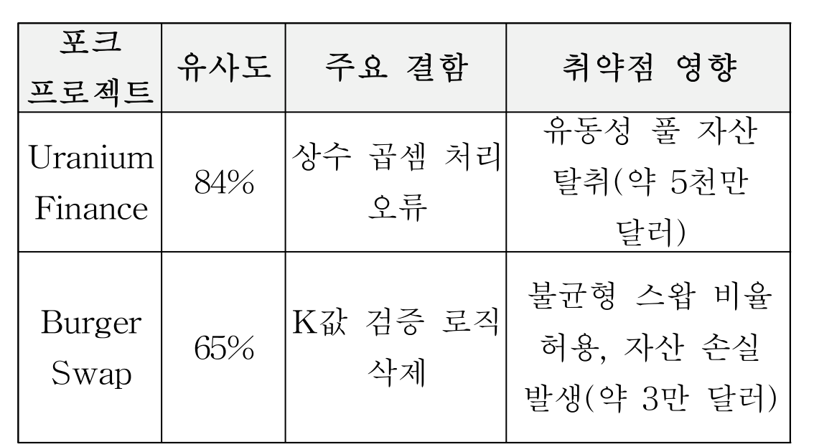

내용
복제한 오픈소스를 수정하다 생긴 결함을 바뀐 곳부터 찾는 절차가 없었습니다.
- 상황
- 스마트 컨트랙트는 배포 후 고칠 수 없어 코드 결함이 곧 자산 피해로 이어집니다.
- 복제 관행
- 선행 조사에서 컨트랙트 33,073개 중 79.2%가 다른 코드를 복제한 것이었습니다.
Research / Smart Contract
오픈소스 컨트랙트를 수정해 쓸 때 원본에서 달라진 코드를 먼저 찾아 우선 검토하는 방법입니다.
텍스트 기반 유사도 측정
텍스트 기반 유사도 측정
2024년 11월 DefiLlama 기준, 운영 중인 전체 DEX의 약 31.9%
복제한 오픈소스를 수정하다 생긴 결함을 바뀐 곳부터 찾는 절차가 없었습니다.
원본과 수정본을 비교해 달라진 함수를 먼저 찾고, 그 부분부터 점검합니다.


실제 사고 2건에서 텍스트 비교로 드러난 변경 코드가 사고 원인과 일치했습니다.



수정된 코드에서 점검할 범위를 유사도 분석으로 미리 좁히는 절차를 제안했습니다.
텍스트 비교에 그친 실험을 구조 기반 학습과 탐지 검증으로 넓히는 것이 과제입니다.